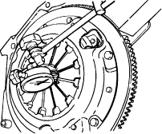
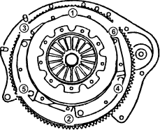

Special Tools Required
- Driver handle 5-8840-0573-0 (J-36190)
- Bushing remover 5-8840-0574-0 (J-37245)
- Bearing remover 5-8840-0575-0 (J-37158)
- Inner bearing installer 5-8840-0576-0 (J-37159)
- Outer bearing installer 5-8840-0577-0 (J-36037)
- Clutch alignment arbor 5-8840-7001-0
Pressure Plate and Drive Plate Removal
- Measure the height of each diaphragm springs at 50mm from centre of pressure plate.Maximum height difference : 1.0 mm (0.039 in) with pressure plate mounting bolt torque of 19 N.m(1.9kgf.m, 14ibf.ft).
TORQUE:
19 Nm (1.9 kgf/m, 14 lbf/ft)

- Remove the pressure plate assembly.
- Remove the driven plate assembly.
- Make the necessary correction or parts replacement if wear, damage or any other abnormal conditions are found during inspection.
- Check the pressure plate for scoring, cracks or warpage.
- Check the driven plate for surface deterioration or contamination with oil.
Slight surface deterioration can be removed with sand pager.
- Measure the clutch disc thickness. If the thickness is less than the service limit, replace the clutch disc.
Driven Plate and Pressure Plate Installation
- Install the driven plate assembly (A) using the special tool.

- Install the pressure plate assembly.

- Tighten the bolts holding the pressure plate assembly in the order shown in the figure.
PRESSURE PLATE MOUNTING BOLT TORQUE:
19 Nm (1.9 kgf/m, 14 lbf/ft)
- Remove the special tools.
- Apply high temperature grease to the input shaft splines in.